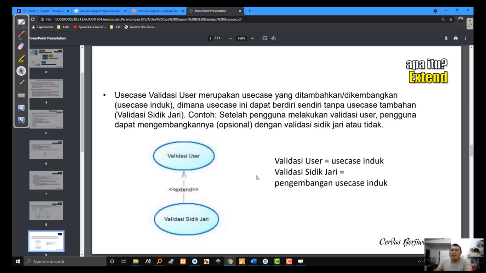

NIM : 1811500002
Nama : Dian Lesmana
Kelompok : TI6A
Hasil saya menyadur di pertemuan 4 :
- Perhitungan Nilai Kehadiran cukup membuat file index.html disetiap direktori pertemuan github (angka), Contoh 4 untuk pertemuan 4
- Membuat File README.MD yang berisikan Nim + Nama + Kelompok sebagai nilai kehadiran
- Perhitungan nilai tugas, dari kualitas konten file index.html tiap pertemuan yang saya sadur akan digunakan untuk perhitungan nilai tugas
- Mempelajari tentang Use Case Diagram dan Deskripsi Use Case
1. Usecase Diagram untuk pengguna utama perangkat lunak
2. Usecase Diagram untuk pengguna admin perangkat lunak
- Mempelajari dan juga menganalisis Materi

- Menyimak Penjelasan yang diberikan oleh dosen
